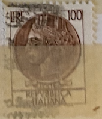
| SOURCE | TITLE| IMAGE MATCH | click to source page |
| eBay | Italiana 100 Lire for sale | eBay | 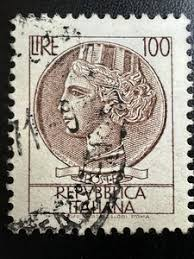 |
| eBay | RARE ITALY STAMP 3 Poste Italy lire 100 Repvbblica Italiana USED | eBay | 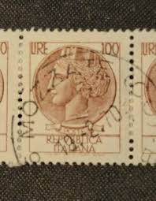 |
| eBay | Rare Italy Stamp, "Coin of Syracuse" series | eBay |  |
| kpolsson.com | Ken P's Coins on Postage Stamps | 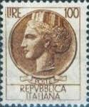 |
| eBay | Italiana 100 Lire for sale | eBay | 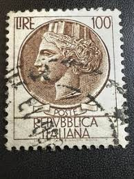 |
| Stamp: Coin of Syracuse (Italy) (Coin of Syracuse) Mi:IT 920C,Yt:IT 684a,Sas:IT 747/I,Un:IT 747I | Selos vintage, Selos raros, Selos | 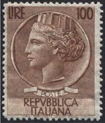 | |
| eBay | Decimal Postage Italian Stamps for sale | eBay | 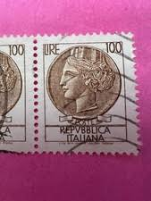 |
| Shutterstock | Italy- Circa 1954 Postage Stamp Printed Stock Photo 119010607 | Shutterstock |  |
| Dreamstime.com | Italian Stamp Shows Ancient Coin of Syracuse, the Series Syracusean Coin, Circa 1968 Editorial Photography - Image of post, issue: 99556582 | 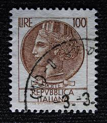 |
| Italian stamps can someone pls tell me if they are worth anything i see alot of different posts for them : r/askStampCollectors | 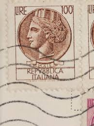 | |
| Bob Shop | Looking for 1959+crown+coin Buy online on Bob Shop. | 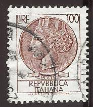 |
| eBay | Brown Postage Italian Stamps for sale | eBay | 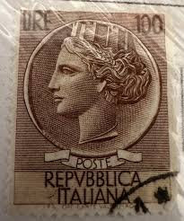 |
| eBay | 100 Lire Italy Stamp for sale | eBay | 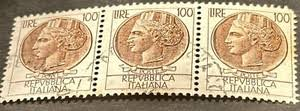 |
| thejunglerat.com | Stamp Lot Rare! Italian Stamp The 100 Lire / Used With A Lot Flaws. One Of The Kind Collectible Stamp Bundle | 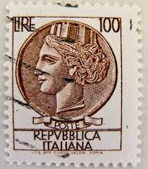 |
| HipStamp | Italy 1955 - U - Scott #661 | Europe - Italy, General Issue Stamp / HipStamp |  |
| Colnect | Italy : Stamps [Year: 1955] [1/14] : Colnect 📮 | 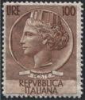 |
| eBay | Rare Italy - Repvbblica Italiana 100Lire; Brown Stamp | eBay | 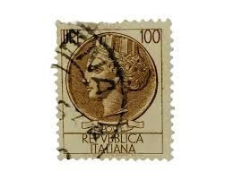 |
| Mercari | Italian Stamp 100 Lire Rare | Mercari |  |
| eBay | Italy - 1959 Italia, New Type - Smooth Paper #2 | eBay | 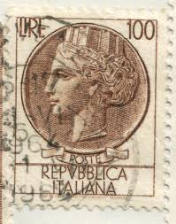 |
| eBay | ITALIEN 1955 955C ** POSTFRISCH TADELLOS 25€(I1302 | eBay | 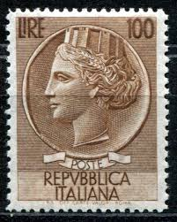 |
| eBay.de | RARE Italy Circa 1958-1966 Stamps 100 and 200 Lire | eBay.de |  |
| vividagallery.com | Italy Turrita Siracusana Cream White Portrait Definitive Stamp Throw Pillow by Vivida Gallery - Vivida Gallery |  |
| Shutterstock | Italy Circa 1971 Stamp Printed Italy Stock Photo 193071023 | Shutterstock | 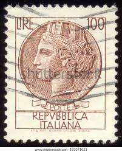 |
| eBay | ITALIAN 100 Lire Syracuse Stamp With Star Watermarks | eBay | 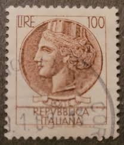 |
| Etsy | This item is unavailable - Etsy | 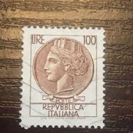 |
| Freepik | Italian postage stamp png sticker ripped paper transparent background | Premium Photo | 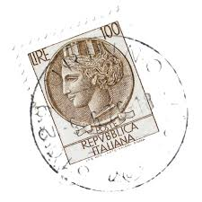 |
| Alamy | Italy Postage Stamp - Coin of Syracuse Stock Photo - Alamy | 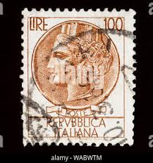 |
| Shutterstock | 25+ Thousand Coin India Royalty-Free Images, Stock Photos & Pictures | Shutterstock | 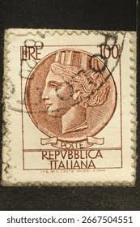 |
| Todocolección | italia 1979 scott 1365 sello ** personajes fran - Buy Antique stamps of Italy on todocoleccion |  |
| Alamy | ITALY - CIRCA 1956: a stamp printed in Italy shows Amedeo Avogadro, was an Italian scientist, most noted for his contribution to molecular theory now Stock Photo - Alamy | 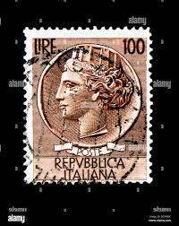 |
| Dreamstime.com | Postage Stamp Italy, 1955, Coin of Syracuse Editorial Photo - Image of heritage, historic: 206388196 |  |
| Alamy | 100 Italian lire coin close-up from 1990s Italy, head side with Italia turrita icon. Isolated on white studio background. Archival collection coin of hundred lires value Stock Photo - Alamy | 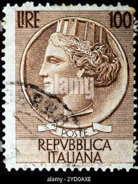 |
| eBay | Syracuse Lire 100 variety dent sx moved | eBay | 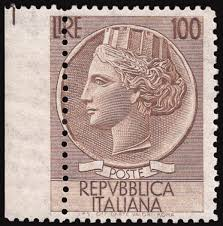 |
| eBay | Italian Stamps for sale | Shop with Afterpay | eBay Australia | 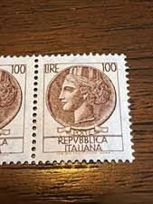 |
| Gumtree Australia | rare stamp | Collectables | Gumtree Australia Local Classifieds | 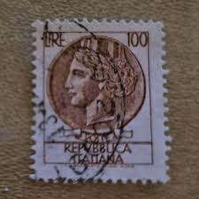 |
| Dreamstime.com | 7,699 Woman Greek Art Stock Photos - Free & Royalty-Free Stock Photos from Dreamstime - Page 75 | 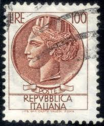 |
| What is the value of these stamps? | 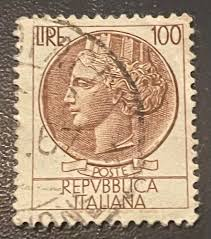 | |
| eBay | ITALY Stamp 1968 100 lire- Sc998e Art figure- 3 used R290 | eBay | 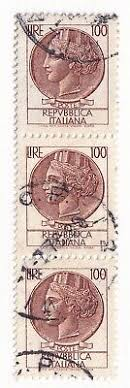 |
| Alamy | Timbre oblitéré Poste. Repubblica Italiana. Lire. 10 Stock Photo - Alamy | 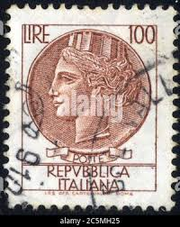 |
| Shutterstock | 3+ Thousand Lire Royalty-Free Images, Stock Photos & Pictures | Shutterstock | 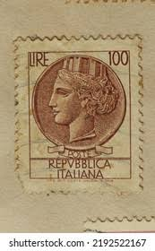 |
| eBay | 1954 Italia 100 Lire Siracusana Testoni Fil. Ruota Mnh** | eBay |  |
| HipStamp | Antonios Philatelics / HipStamp | 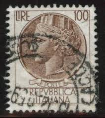 |
| PicClick UK | RARE STAMP OF Italy 30 Lire Republica Italiana Star Water Markings £99.00 - PicClick UK |  |
| eBay | RARE Italy Circa 1958-1966 Stamps 100 and 200 Lire | eBay |  |
| Dreamstime.com | Isolated Italian Stamp editorial image. Image of philately - 380860755 | 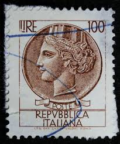 |
| eBay | Stamp of Italy - 100 Lire - Repubblica Italiana - No postage marks | eBay | 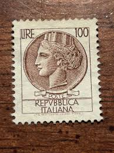 |
| allnumis.com | Stamps Catalog - List of stamps for 1950-1959 generic, Italy | 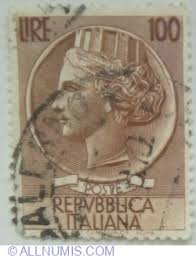 |
| Shutterstock | Italy- Circa 1959-1966 Postage Stamp Printed Stock Photo 119010586 | Shutterstock | 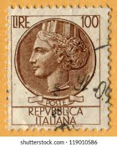 |
| eBay | ITALY STAMP 1954 920A WATERMARK FLÜGELRAD USED F/VF | eBay | 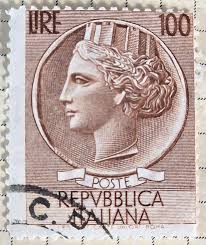 |
| eBay | ITALIANA 100 Lire Syracuse Stamp W/Star Watermarks | eBay | 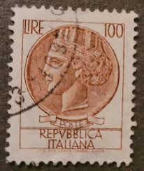 |
| PicClick | ITALIAN POST-1954 A Syracuse Repubblica Italiana 100 L used stamp light brown $10.00 - PicClick | 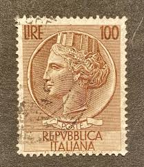 |
| Shutterstock | 1,845 Rome Mail Post Royalty-Free Images, Stock Photos & Pictures | Shutterstock | 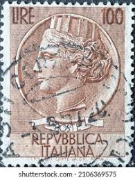 |
| eBay | Syracuse Lire 100 (vinyl) variety color spots | eBay | 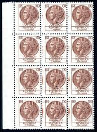 |
| eBay | 100 & 20 Lire italian stamps | eBay | 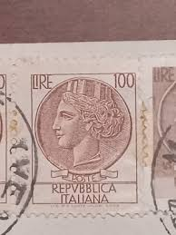 |
| Freepik | Png vintage italian postage stamp sticker collage element on transparent background | Premium Photo | 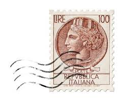 |
| eBay | Italian Stamps for sale | eBay | 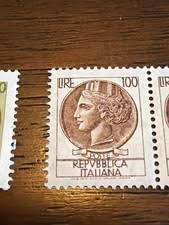 |
| eBay | RARE ITALY STAMP 3 Poste Italy lire 100 Repvbblica Italiana USED | eBay | 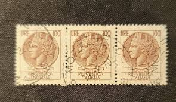 |
| eBay | Rare 100 Lire Stamp Italy Italian great condition | eBay | 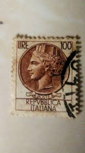 |
| Do you personify your country in feminine or masculine terms? Do you not view it with with any gender? : r/AskTheWorld | 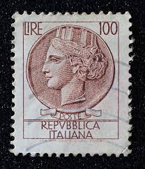 |